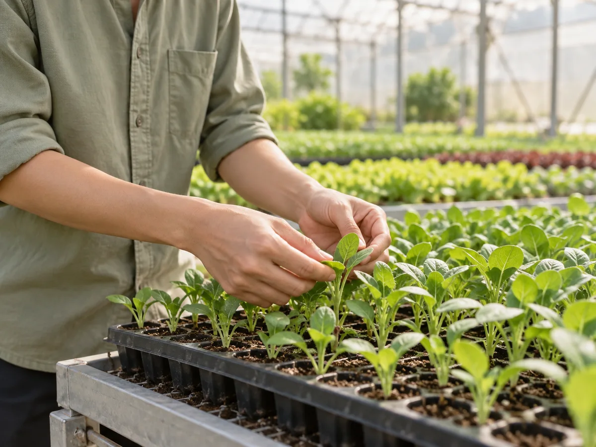

Sứ mệnh
Đưa rau tươi và kiến thức về cách trồng đến gần bữa ăn hằng ngày. Chúng tôi muốn việc lựa chọn thực phẩm bắt đầu từ sự hiểu biết, thay vì chỉ từ một lời giới thiệu trên bao bì.

Giữa nhịp sống thành phố, một bữa cơm có rau tươi là điều quen thuộc. Nhưng phía sau sự quen thuộc ấy là những câu hỏi đáng được quan tâm: rau đã lớn lên như thế nào, ai chăm sóc và hành trình đến căn bếp đã đi qua những đâu? Ươm Xanh bắt đầu từ mong muốn đưa những câu hỏi đó đến gần hơn với mỗi người.
Chúng tôi chọn nông nghiệp thông minh làm hướng đi: kết nối hiểu biết về cây trồng, sự chăm chút của con người và khả năng theo dõi của công nghệ. Mục tiêu là xây dựng một thương hiệu mà khi nhắc đến, người ta nhớ đến rau tươi, một quy trình dễ hiểu và cách sống biết quan tâm hơn đến nguồn thực phẩm của mình.
Đưa rau tươi và kiến thức về cách trồng đến gần bữa ăn hằng ngày. Chúng tôi muốn việc lựa chọn thực phẩm bắt đầu từ sự hiểu biết, thay vì chỉ từ một lời giới thiệu trên bao bì.
Hướng đến mô hình nông nghiệp gần gũi với đô thị, nơi không gian trồng được tổ chức hợp lý và tài nguyên được sử dụng có cân nhắc. Một nông trại có thể trở thành cầu nối giữa người trồng và người ăn.
Tươi mới trong sản phẩm, chỉn chu trong chăm sóc, rõ ràng trong thông tin và có trách nhiệm với tài nguyên. Những giá trị này là cơ sở để Ươm Xanh lựa chọn cách phát triển lâu dài.
“Ươm” là dành thời gian cho một điều còn nhỏ. Một hạt giống cần được đặt đúng chỗ, có độ ẩm phù hợp và được quan sát trước khi trở thành cây. Chúng tôi yêu tinh thần ấy: bắt đầu cẩn thận, không vội vàng bỏ qua những việc tưởng như đơn giản.
“Xanh” vừa là màu của lá, vừa là hướng nhìn về tương lai. Đó có thể là một bữa ăn nhiều rau hơn, một lần mua vừa đủ hoặc một quyết định giảm phần thực phẩm bị bỏ đi. Những lựa chọn nhỏ, khi được duy trì, tạo nên thói quen có ý nghĩa.
Đặt hai tiếng cạnh nhau, Ươm Xanh mang theo lời nhắc về sự kiên nhẫn. Thương hiệu chúng tôi muốn xây dựng cần thời gian để lớn lên, giống như chính những mầm cây mà nó đại diện.
Chăm một mầm cây cũng là học cách quan tâm đến những điều nuôi dưỡng mình.
Mỗi nhóm rau có nhịp phát triển riêng. Chọn công nghệ cần bắt đầu từ nhu cầu của cây và điều kiện trồng, rồi mới đến thiết bị hay các chỉ số trên màn hình.
Một chiếc lá đổi màu hay một bộ rễ phát triển chậm đều cần được quan sát. Dữ liệu hỗ trợ người chăm sóc đặt câu hỏi và kiểm tra kỹ hơn, thay vì thay thế hoàn toàn kinh nghiệm.
Tên loại rau, cách sử dụng và hành trình chăm sóc là những thông tin thiết thực. Ươm Xanh ưu tiên cách diễn đạt gần gũi để người xem có thể hiểu và tự lựa chọn.
Nông nghiệp có thể nghe xa với người sống trong thành phố. Nhưng mỗi lần chọn rau, chuẩn bị bữa tối hay chia sẻ một món ăn, chúng ta đều đang có một mối liên hệ với người trồng. Ươm Xanh muốn làm rõ mối liên hệ đó bằng hình ảnh, câu chuyện và những kiến thức dễ áp dụng.
Chúng tôi dành chỗ trên website cho cả công nghệ lẫn căn bếp: cách nước đi qua hệ thống trồng, điều gì diễn ra khi cây lớn lên và nhóm rau nào phù hợp với từng món. Khi hiểu nhiều hơn, một lựa chọn quen thuộc cũng có thể trở nên có chủ đích hơn.
Hành trình phía trước được định hình bởi những cuộc trò chuyện như vậy. Dù bạn quan tâm đến một loại rau, muốn tìm hiểu mô hình hay có ý tưởng hợp tác, Ươm Xanh luôn mong được lắng nghe.